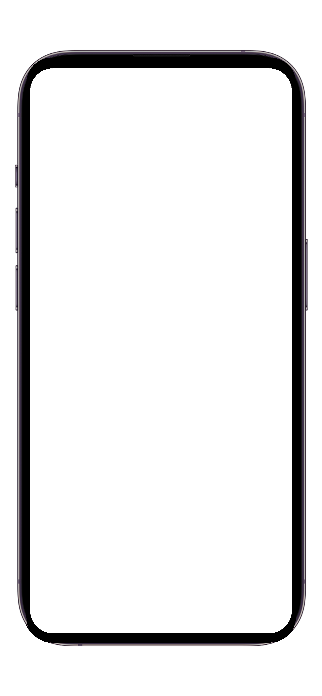
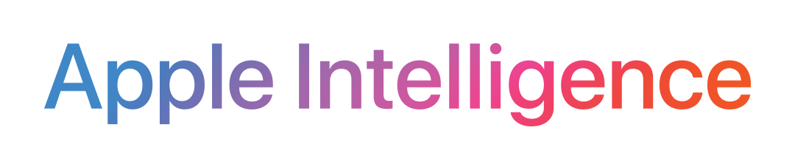

Life manager for goals, habits, tasks, and purpose.
Your life is not a to-do list.
Turn life's chaos into clarity with one system that connects your purpose, fulfillment areas, goals, action plans (tasks), little wins (habits), capture list, and reflections.
Built for iPhone users comparing productivity apps, goal trackers, habit trackers, task managers, daily planners, journals, and AI planning tools.
One life management system for your goals, habits, and tasks.
Loom starts with what drives you, organizes the life areas that need attention, then connects each area to goals, daily Little Wins, and focused Action Plans.
Purpose
Your passions reveal who you are and what drives you.
love
vows
thrill
hate
Fulfillment
These areas make up your life.
Career & Business
Health & Energy
Love & Relationships
Wealth & Finance
+ Custom Area
Little Wins
Action Plans
A calm command center.
Loom gives purpose, life areas, goals, tasks, and daily habits a shared structure instead of leaving them scattered across separate apps.

See the bigger picture
Purpose, Fulfillment, Goals, and Capture stay visible so daily work stays connected to what matters.
Direction into goals
Set targets with timelines, measurable progress, and a clear connection back to the life areas they support.
Little Wins compound
Build daily momentum with small repeatable actions that make progress feel possible most days.
LoomAI guidance
Ask for help clarifying goals, plans, priorities, rewrites, and next steps without leaving your system.
A goal tracker, habit tracker, task planner, and reflection system in one.
Loom is not another place to dump tasks. It is a practical system you can return to every day.
Purpose
Define your life vision and passions: what you love, vow, thrill toward, and refuse to tolerate.
Fulfillment Areas
Organize 3-7 core life areas like career, health, wealth, relationships, faith, learning, service, home, and custom areas.
Goals
Turn direction into real targets with timelines, progress, and context tied back to the life areas they support.
Action Plans
Move from goals and captured tasks into focused execution with due dates, people, places, attachments, duration, musts, and status.
Little Wins
Create small daily acts like walking, sleeping enough, writing, gratitude, prayer, or reaching out to a friend.
Reflections
Review what worked, what fell behind, what needs to change, and whether actions still match what matters.
LoomAI
Get guidance for planning, rewrites, priorities, Little Wins, stuck areas, and purpose or fulfillment insights.
Capture
Keep tasks, information, commitments, links, attachments, and anything you need to remember in one navigable place.
Health signals and AI support, when they help.
Loom keeps the system grounded. Integrations support your actions instead of replacing your judgment.
Works with Apple Health
Using Loom with the Apple Health app on iPhone empowers you to better manage your health. Loom can read selected metrics you permit, such as steps, workouts, and sleep, to support health-backed Little Wins.
Apple Intelligence

Apple Intelligence is built into iPhone, iPad, Mac, and Apple Vision Pro with privacy at its core. On supported devices, LoomAI can use Apple Intelligence to help with planning, priorities, rewrites, and next steps.
Research-inspired, practically designed.
Loom is an independent product built around a simple belief: daily action should stay connected to what matters.
Why Loom exists
I built Loom because I wanted the best way to connect long-term direction with daily action. Not another app pretending to solve everything, but a calm command center for life.
End Stress. Live Fulfilled.
Research and inspiration
Loom draws from broad productivity and personal-development ideas, then turns them into one practical app structure.
-
Tony Robbins - Time of Your Life
- Rapid Planning Method (RPM).
- David Allen - Getting Things Done: The Art of Stress-Free Productivity.
- Stephen R. Covey - The 7 Habits of Highly Effective People.
- Habit formation research.
- Goal-setting theory and research.
- Journaling and reflection practices.
- AI-assisted planning workflows.
Loom is not affiliated with, sponsored by, or endorsed by Tony Robbins, David Allen, Stephen Covey, or their organizations.
Same premium access, flexible options.
Choose lifetime access during the launch window, or subscribe annually or monthly as those options become available.
Limited offer
Loading...
Founding Member (Lifetime)
$129 once
One-time purchase. No subscription renewal. Full access to current and upcoming Loom features for life.
Billed by Apple after purchase confirmation through the App Store.
Launches Soon
Loading...
Annual
$180
$79 / year
Auto-renewable yearly subscription with a 10-day free trial. Planned launch: June 1, 2026.
Launches Soon
Loading...
Monthly
$15 / month
Auto-renewable monthly subscription for flexible access. Planned launch: July 1, 2026.
Compare Loom with Todoist, TickTick, Notion, Things, Structured, Sunsama, and Streaks.
If you are searching for a Todoist alternative, TickTick alternative, Notion alternative, Things 3 alternative, Structured alternative, Sunsama alternative, or Streaks habit tracker alternative, Loom is the best choice when you want purpose, goals, tasks, habits, capture, AI, and reflection connected in one iPhone life manager.
One system instead of scattered productivity apps.
Loom connects the whole chain from purpose to daily action, so your goals, tasks, habits, capture list, reflection, and LoomAI all point in the same direction.
Purpose
Goals
Action Plans
Little Wins
LoomAI
Most competitors solve one piece well.
Todoist, TickTick, Notion, Things, Structured, Sunsama, and Streaks can be useful for tasks, databases, schedules, work planning, or streaks, but they do not make the whole life system first-class.
Choose Loom when the list is not enough.
If your real problem is not capturing another task, but staying aligned with the life you want to build, Loom is designed for that job from the first screen.
This comparison focuses on first-class product positioning and officially listed features. Several competitors can approximate missing workflows through templates, recurring tasks, databases, or manual setup, but Loom makes the connected system the default.
Connected life system
Loom advantage
Loom connects purpose, fulfillment areas, goals, Action Plans, capture, Little Wins, reflection, and LoomAI in one system.
Competitors: Most alternatives optimize one layer, such as tasks, databases, calendars, workdays, or habit streaks.
Todoist: tasksNotion: workspaceStreaks: habits
Purpose-first planning
Loom advantage
Purpose is a core Loom layer, so daily action starts with who you are and what you are building.
Competitors: Purpose is usually not dedicated, work-focused, or something you must build manually with notes, projects, or templates.
Manual setupNot task-nativeNot habit-native
Fulfillment areas
Loom advantage
Loom organizes life into areas like health, career, wealth, relationships, faith, learning, service, home, and custom areas.
Competitors: Life areas are typically projects, labels, folders, channels, colors, or habits, not a dedicated balance layer.
ProjectsLabelsDatabasesHabits
Goals tied to action
Loom advantage
Loom goals connect back to life areas and forward into Action Plans and Little Wins, making progress easier to see.
Competitors: Goals can be approximated, but the purpose-to-area-to-action chain is usually partial or manual.
PartialManual relationsWork-focused
Action Plans and capture
Loom advantage
Loom turns captured tasks into focused Action Plans with context like due dates, musts, people, places, attachments, duration, and status.
Competitors: Several are strong task managers, but Loom wins when tasks need to stay connected to purpose, areas, and goals.
Todoist strongThings strongLoom connected
Little Wins for habits
Loom advantage
Little Wins are small repeatable actions tied to your bigger life system, not isolated streaks.
Competitors: Habit apps and recurring tasks can track repetition, but Loom ties repetition to goals, areas, and daily meaning.
TickTick habitsStreaks habitsLoom context
Reflection and review
Loom advantage
Loom closes the loop by helping you review whether your actions still match what matters.
Competitors: Activity data, stats, completed lists, or manual journals can help, but broad life reflection is not the core workflow.
StatsWork reviewManual journal
LoomAI inside the system
Loom advantage
LoomAI helps with planning, priorities, rewrites, Little Wins, stuck areas, and next steps using the Loom system as context.
Competitors: AI may be available elsewhere, but it is often task-assist, workspace-assist, or day-planning support rather than life-system guidance.
Task AIWorkspace AILoomAI
Apple Health-backed wins
Loom advantage
Loom can use optional Apple Health signals to support health-backed Little Wins like walking, workouts, and sleep.
Competitors: Health support is not a core feature for most alternatives; Streaks supports Health habit tasks but is habit-first.
Optional HealthRead-only signalsLife context
Premium access value
Loom advantage
The Founding Member deal gives lifetime access to the full connected Loom system during the launch window.
Competitors: Lower-cost or subscription tools can be useful, but they usually buy one specialized workflow, not Loom's full life-management system.
$129 lifetimeLimited offerFull system
Sources and comparison notes
Last verified: April 30, 2026. Pricing and features can change; source links point to the official or platform pages reviewed.
Loom App Store
Todoist pricing
Todoist price update
TickTick features
TickTick Premium
Notion pricing
Things 3 App Store
Things 3 for iPad
Structured App Store
Sunsama pricing
Sunsama weekly planning
Streaks App Store
This comparison focuses on first-class product positioning and officially listed features. Several competitors can approximate missing workflows through templates, recurring tasks, databases, or manual setup.
Loom is independent and is not affiliated with, sponsored by, or endorsed by Todoist, TickTick, Notion, Things, Structured, Sunsama, Streaks, Apple, or their owners. Competitor names are used only for comparison.
Built for launch, designed to grow.
Loom 1.0 has the core life-management system in place, and early support helps fund the deeper intelligence layer.
Available now
Core Loom functionality is live on iPhone: purpose, fulfillment areas, goals, action plans, little wins, reflection, capture, and LoomAI support.
Subscription launch
Subscription pricing starts with Annual on June 1, 2026 and Monthly on July 1, 2026. Founding Member Lifetime access remains the launch-window deal.
Roadmap
Future R&D targets include deeper intelligence, agentic task completion, and Android or web support later in 2026 if iOS adoption supports the expansion.
FAQ
What is Loom?
Loom is a life management app that connects your purpose, life areas, goals, and daily actions into one system so you can end stress and live fulfilled.
Who is Loom for?
Loom is for people who never feel in control of time or want more progress toward their goals. It is especially useful for people who care about personal growth, goal setting, life planning, daily habits, purpose-driven productivity, and AI empowerment.
How is Loom different from a to-do list or habit tracker?
Most productivity apps help you track tasks or require lots of input without a human-oriented system, so many create more noise. Loom connects the full chain: Purpose > Fulfillment Areas > Goals > Action Plans (tasks) > Little Wins (habits) > Reflection in an effortless system.
What does the Founding Member (Lifetime) reward include? When will backers get access?
Full access to all Loom features, current and upcoming, for life. Backers get access immediately via a one-time in-app redemption code.
Is Loom available for Android or on the web?
Loom currently does not have Android or web applications in development, though they are on the roadmap for late 2026, barring poor iOS adoption.